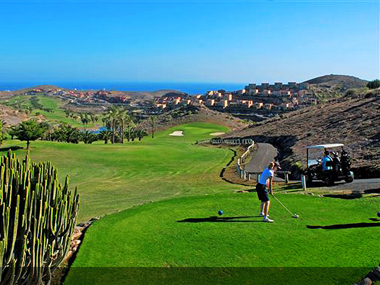
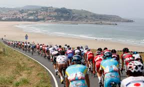
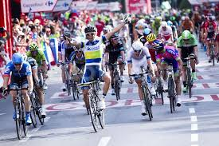
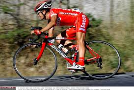

Golf
Golf is a club and ball sport in which players use various clubs to hit balls into a series of holes on a course in as few strokes as possible.
Golf is one of the few ball games that do not requires a standardised playing,its played on a course with an arranged progression of eithier nine or 18 holes . Its also play oh different standard of terrain such as fairway,rough,and hazards,but each hole on course is unigue in its specific layout arangement.
Cycling
  Cycling also called bicycling or biking is the use of bicycles for transport,recreation,exercise or sport
The people who ride the bikes are called cyclists or bikers also includies the riding of unicycles tricycles,quadracycles,recumbent and simial human-powered vehicles
It really got introduced in the 19th century and now number approximatley one billion world wide,In alot of countries they commonly use bicycles as a a vehicle for road transportion using them for a daily basis. some countries rely on transportated of a bicycles becuase of culture has developed around bicycle as a primary form of transport, two maain coutries are in Europe ,such as Belgium and Netherlands
Football

Did you know that Association football is the most popular sport and a widespread passion in spain,This sport has the most registered players and the most registered clubs. Thes are facts among all spanish sport federations according to data issued by the sports administration of spain.Things that come with football in spain is GAMBLING on football.Its popular and is organised through a tote system called the Quiniela. There are two names fútbol or soccor ,spanish football fans are smoung the most dedicated and fervent in europe and are matched in therei fanaticism only by the italians.
Sports
There are many different sports that are in spain that some many coutries love. But people in spain just adore these sports. Many kids start at a young age so that they are prepared for when high school comes and it gets really competitive. So ask your self , Who would not love sports??